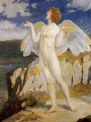

Аонгус або Аенгус, Оенгус, в ірландській міфології прекрасний бог любові, син батька богів і покровителя друїдів Дагда й богині води Боанд. Над головою красеня Аонгуса завжди пурхали чотири пташки, символи поцілунків. Птахи часто фігурують в описах його залицянь за Каер, дівчиною-лебедем божественного походження, родом з Коннахта.
Її батько, Етал з Племен богині Дану, противився шлюбу, поки батько Аонгуса, Дагда, не прихопив його в полон. Було вирішено, що Аонгус одружується на Каер, якщо дізнається її серед зграї лебедів і якщо вона погодиться вийти за нього заміж. На святі Самайн юнак побачив Каер, що пливе по озеру в супроводі ста п'ятдесяти білосніжних птахів. Він одразу впізнав її, і дівчина стала його дружиною.
Цікавий міф за участю Аонгуса, який пов'язаний з його прийомним сином Діармаітам Любовний Плямочка. Під час полювання таємнича незнайомка поставила на чолі цього привабливого юнака чарівне плямочка любові.
З тих пір жодна жінка, не могла, подивившись на Діармаіта, не закохатися в нього. Так сталося і з Граінне, дочкою короля Ірландії, колишньої нареченої ватажка фениев Фінна Маккула. Аонгус врятував закоханих від люті великого воїна Фінна, але не зміг захистити сина від іклів чарівного кабана. Він привіз тіло Діармаіта в свій палац на березі річки Воєн і вдихнув в нього нову душу. Молодий воїн став жити з Племенами богині Дану, які на той час покинули верхній світ і оселилися під землею Ірландії. У грецькій міфології йому відповідає Ерот.